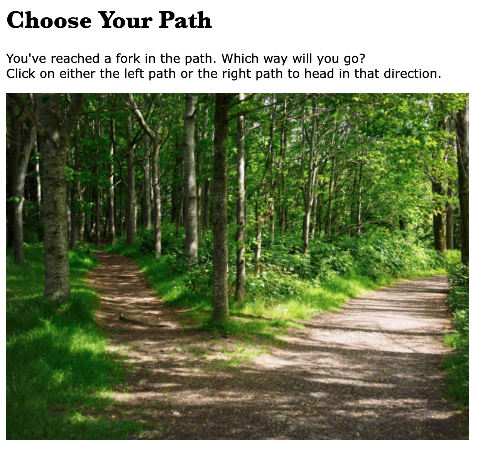

Net.art
The objective of this project was to create a series of pages with links, text, and images to tell a story or experience in a poetic, modern, hypertext way. My website is a fun little experience with nature. It shows that different paths can led you to different parts of nature, where there will be various things to see. The idea is that you can choose to look around and explore your surroundings wherever you are in nature to see what it has to offer.
Below are preview screenshots of the first two pages of my Net art. Visit my Net art site at https://oliviajoyyy.github.io/net-art-74/

